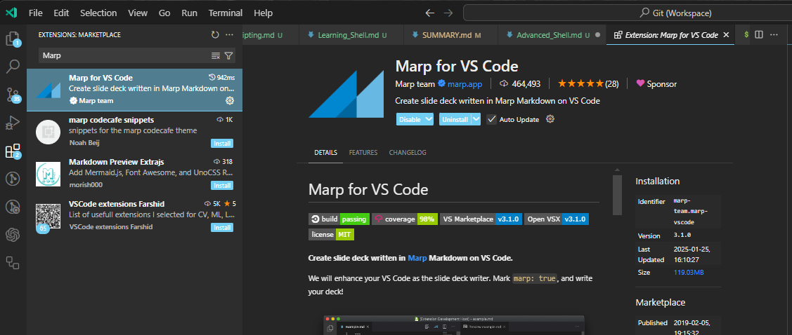
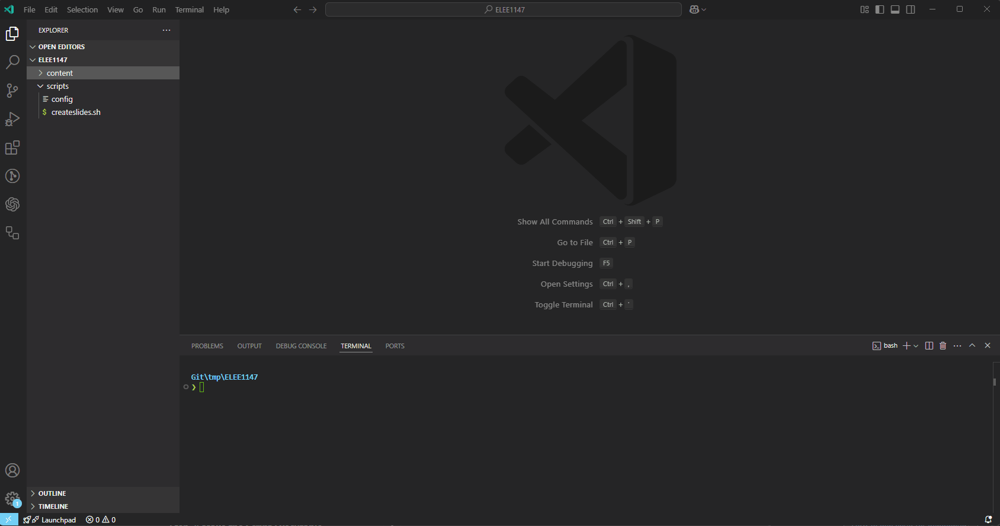

Advanced Shell
Ensure you have a Bash shell available and working. You should already be comfortable with basic shell scripting concepts, including variables, loops, and conditionals, see Learning_Shell/Learning_Shell.md
Task 1. Using functions
Functions need to be defined before they are invoked, remembering that the language interpreted line by line.
-
Create a new script called
functions.sh: -
Try running the script to see what happens
Task 2: Arrays
-
Create a new script
arrays.sh#! /usr/bin/env bash declare -a fruits=("Apple" "Banana" "Cherry") echo "Length of fruit: ${#fruits[@]}" echo "First fruit: ${fruits[0]}" echo "All fruits: ${fruits[@]}" # If elements contain spaces, ensure each element remains distinct echo "All fruits: ${fruits[*]}" # Merges all elements into a single string for fruit in "${fruits[@]}"; do echo "I like $fruit" done unset fruits[2] # remove the third element (remember 0 indexed) for fruit in "${fruits[@]}"; do echo "Actually, I like $fruit" doneKey Differences:
-
${fruits[@]}expands to individual elements (preserves words when quoted). -
${fruits[*]}expands to a single string with elements joined by a space when quoted. -
If elements contain spaces, quoting
"${fruits[@]}"ensures each remains distinct, whereas"${fruits[*]}"merges them into a single string.
-
-
Try running the script to see what happens
Task 3: Processing Files
So interestingly [ is actually a command also known by test
-
Create a new file called
file_processing.sh#! /usr/bin/env bash input_file="input.txt" if [[ ! -e "$input_file" ]]; then echo "Error: File $input_file does not exist." exit 1 fi while IFS= read -r line; do echo "Processing: $line" done < "$input_file" -
Try running the script
Question: So, why?
- If you look at the
ifstatement the-eoption meansFile existsand the!inverses the result. You can always revisit https://www.man7.org/linux/man-pages/man1/test.1.html.
- If you look at the
-
Now create the
input.txtfile in the same direcorty as the script and append the file: -
Try running the script, again...
Task 4: Error handling
The set command in Bash is a built-in command used to change the values of shell options and positional parameters, or to display the names and values of shell variables.
-
If you run
setin the terminal you will see all of the shell variables and functions:$ set HISTFILE='/root/.bash_history' HOME='/root' HOSTNAME='localhost' IFS=' \t\n' LINENO='' OLDPWD='/' OPTIND='1' PAGER='less' PATH='/usr/local/sbin:/usr/local/bin:/usr/sbin:/usr/bin:/sbin:/bin' PPID='1' PS1='\h:\w\$ ' PS2='> ' PS4='+ ' PWD='/root' SHLVL='3' TERM='linux' TZ='UTC-01:00' _='--version' script='/etc/profile.d/*.sh' ...- Your output may differ slightly based on your shell!
-
We can use the
setinside a shell script to handle errors etc, create a script calledset.sh, that displays the contents of a file and outputs a message if the file exists in our directory:#! /usr/bin/env bash set -e mkdir newfolder cat filenotindirectory echo 'The file is not in our directory!'When a query returns a non-zero status, the
-eflag stops the script. It also detects errors in the currently executing script. -
Run the script:
Task 5: "Debugging"
-
Debugging in Bash is an essential skill for identifying and resolving issues in shell scripts. It involves systematically examining the script to understand its behavior and pinpoint errors.
-
One of the most effective ways to debug a Bash script is by using the
set -xcommand, which prints each command and its arguments to the terminal before executing them. -
Or you can use
bash -x <script> -
This helps you trace the script’s execution flow and identify where it deviates from expected behavior.
-
Create a new script
line-by-line.sh, where we will iterate over0...nand output each step to the terminal using theset -x -
Run this script
-
Rerun the
file_processing.shyou created before but this time pass-xto thebashcommand
Task 6: Automating, How I make lecture slide templates.
- The goal of this lab is to help you understand how I automate the creation of structured lecture files using a shell script. The script allows the creation Markdown files with pre-defined content, environmental variables, and formatting.
-
Make sure you change directory and call it
lecturesand reproduce the following structurelectures |___scripts |___ config |___ createslides.sh |___content -
Edit the
scripts/configfile, which will hold some environment variables thatcreateslides.shwill use: -
Now edit the
scripts/createslides.sh:-
At the top of the file reproduce the following:
#! /usr/bin/env bash MODULE_DIR=$( cd -- "$( dirname -- "${BASH_SOURCE[0]%/*}" )" &> /dev/null && pwd ) LECTURE_FOLDER=${MODULE_DIR}/content/$1 # default name is $1 if $2 not supplied LECTURE_FILENAME=${2:-$1} if [[ ! -d ${LECTURE_FOLDER} ]];then mkdir ${LECTURE_FOLDER} fi #set environmental variables source ${MODULE_DIR}/scripts/config-
The first line of the script identifies the directory where the script is located:
-
MODULE_DIR=$( cd -- "$( dirname -- "${BASH_SOURCE[0]%/*}" )" &> /dev/null && pwd ) -
This ensures that the script can access files relative to its own location.
-
-
The script expects two arguments:
-
$1: The folder name to store the lecture (content/$1). -
$2: The filename for the lecture. If this is not supplied, it defaults to$1.LECTURE_FOLDER=${MODULE_DIR}/content/$1 LECTURE_FILENAME=${2:-$1}
-
-
If the directory specified in
$LECTURE_FOLDERdoesn't exist, it gets created:if [[ ! -d ${LECTURE_FOLDER} ]];then mkdir ${LECTURE_FOLDER} fi -
The script then sources the
configfile withsource, which contains environmental variables related to the modulesource ${MODULE_DIR}/script/config
-
-
-
Continuing on with the
createslides.shafter thesource ${MODULE_DIR}/script/configwe are going to build the template file for the markdown slide deck:... cat >> ${LECTURE_FOLDER}/${LECTURE_FILENAME}.md << EOF --- title: DOCUMENT TITLE description: DESCRIPTION OF DOCUMENT class: gaia _class: - lead - invert style: | #img-right{ float: right; } img[alt~="center"] { display: block; margin: 0 auto; } table { border-collapse: collapse; font-size: 22px; } table, th,tr, td { border: none!important; vertical-align: middle; } section::after { content: attr(data-marpit-pagination) '/' attr(data-marpit-pagination-total); } footer: "$modulecode | $modulename" size: 16:9 paginate: true _paginate: false marp: true math: true --- <!-- _footer: "[Download as a PDF](https://github.com/UniOfGreenwich/${modulecode}-Lectures/raw/gh-pages/content/${LECTURE_FOLDER}/${LECTURE_FILENAME}.pdf)" --> # ${LECTURE_FILENAME} Module Code: $modulecode Module Name: $modulename Module Leader: $moduleleader --- EOF # remove environment variables from current shell unset $modulecode $modulename $moduleleader -
If you are using Visual Studio Code, you can get the
Marpextentsion from the marketplace, which will render the Markdown as a slide deck.
-
Now you can run the script like so...

Full Code: createsilides.sh
#! /usr/bin/env bash MODULE_DIR=$( cd -- "$( dirname -- "${BASH_SOURCE[0]%/*}" )" &> /dev/null && pwd ) LECTURE_FOLDER=${MODULE_DIR}/content/$1 # default name is $1 if $2 not supplied LECTURE_FILENAME=${2:-$1} if [[ ! -d ${LECTURE_FOLDER} ]];then mkdir ${LECTURE_FOLDER} fi #set environmental variables source ${MODULE_DIR}/scripts/config cat >> ${LECTURE_FOLDER}/${LECTURE_FILENAME}.md << EOF --- title: DOCUMENT TITLE description: DESCRIPTION OF DOCUMENT class: gaia _class: - lead - invert style: | #img-right{ float: right; } img[alt~="center"] { display: block; margin: 0 auto; } table { border-collapse: collapse; font-size: 22px; } table, th,tr, td { border: none!important; vertical-align: middle; } section::after { content: attr(data-marpit-pagination) '/' attr(data-marpit-pagination-total); } footer: "$modulecode | $modulename" size: 16:9 paginate: true _paginate: false marp: true math: true --- <!-- _footer: "[Download as a PDF](https://github.com/UniOfGreenwich/${modulecode}-Lectures/raw/gh-pages/content/${LECTURE_FOLDER}/${LECTURE_FILENAME}.pdf)" --> # LECTURE TITLE Module Code: $modulecode Module Name: $modulename Module Leader: $moduleleader --- EOF # remove environment variables from current shell unset $modulecode $modulename $moduleleader